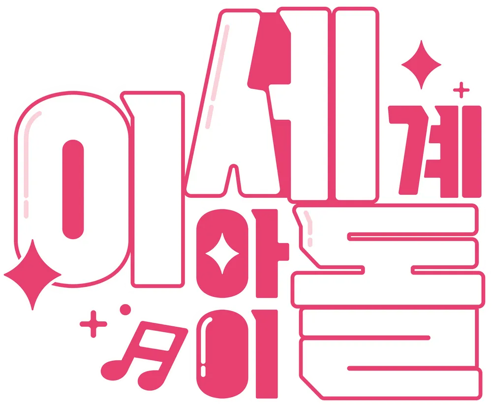

본래 임시로 사용되었지만 그래도 굳어진 이름으로, 프로젝트명과 그룹명이 동일하다.
버추얼 아이돌이라는 특성에 걸맞게 다른 세계의 아이돌이라는 의미가 담겨있다.
|  |
| 로고 |
| 가로형 로고 |
기존의 국내외 버추얼 유튜버들과는 달리, 이세계아이돌은 컨셉(RP)이 거의 없다시피 하여
실제 본인을 그대로 드러내고 이름도 일본식 작명에서 벗어난 모습을 사실상 처음 선보였다.
캐릭터를 내세웠을 뿐, 일반적인 노캠 인터넷 방송인과 크게 다르지 않은 이러한 형태는 빠르게 확산되어
한국 버추얼 유튜버의 특징이 되었다.